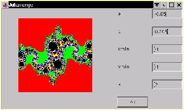

Der französische Mathematiker Gaston Julia hat zu Beginn des 20. Jahrhunderts eine bestimmte Menge von komplexen Zahlen untersucht. Diese komplexen Zahlen haben die Eigenschaft, dass sie bei der Iteration
konvergieren. Stellt man die komplexen Zahlen, die diese Eigenschaft aufweisen, farblich dar, so erhält man komplizierte FLächenmuster, deren Gestalt von der Wahl der Konstanten abhängt. Man sich leicht davon überzeugen, dass eine geringfügig anders gewählte Konstante zu einer deutlich anderen Julia-Menge führt.
Ähnlich wie bei der Mandelbrot-Menge (siehe vorangegangenes Beispiel) wählen wir ein Quadrat aus der komplexen Zahlenebene aus (Eckpunkt (xmin, ymin), Kantenlänge k) und geben eine Konstante c = (a,b) an. Das (im Allgemeinen relativ kleine) Quadrat der kopmlexen Zahlenebene wird auf einen größeren Bildschirmbereich ``gezoomt'' (im Beispiel auf 200x200 Pixel). Daraus bestimmen wir die Schrittweite ds = k / 200 für die Iterationen.
Ist ein Punkt Element der Julia-Menge (verhält er sich bei der Iteration konvergent), so wird er schwarz eingefärbt. Um die ``divergenten'' Punkte klassifizieren zu können, untersucht man, wie ``rasch'' sie gegen streben. Weist die kopmlexe Zahl schon nach weniger als 10 Iterationen einen Betrag größer als 2 auf, so wird der zugerhörige Punkt rot eingefärbt. Verlässt der Punkt Kreis mit Radius 2 erst nach mehr als 10 aber mit weniger als 20 Iterationen, so zeichnen wir ihn grün, usf. Dies ist im Programmcode durch eine Reihe von if - Abfragen realisiert.
import java.awt.*;
import java.awt.event.*;
public class julia extends Frame implements ActionListener {
TextField aein;
TextField bein;
TextField xminein;
TextField yminein;
TextField kein;
Button ok;
double a;
double b;
double xmin;
double ymin;
double k;
public static void main(String arguments[]) {
julia proggi = new julia();
WindowListener wl = new WindowAdapter() {
public void windowClosing(WindowEvent e) {
System.exit(0);
}
};
proggi.addWindowListener(wl);
proggi.setLocation(100,100);
proggi.setSize(500,300);
proggi.show();
}
public julia() {
super("Juliamenge");
setLayout(new BorderLayout());
Panel panel = new Panel();
panel.setLayout(new GridLayout(6,2,10,20));
Label l1 = new Label("a");
panel.add(l1);
aein = new TextField("-1",8);
panel.add(aein);
Label l2 = new Label("b");
panel.add(l2);
bein = new TextField("0.28",8);
panel.add(bein);
Label l3 = new Label("xmin");
panel.add(l3);
xminein = new TextField("-1",8);
panel.add(xminein);
Label l4 = new Label("ymin");
panel.add(l4);
yminein = new TextField("-1",8);
panel.add(yminein);
Label l5 = new Label("k");
panel.add(l5);
kein = new TextField("2",8);
panel.add(kein);
ok = new Button ("ok");
panel.add(ok);
ok.addActionListener(this);
add("East",panel);
}
public void actionPerformed(ActionEvent e) {
if (e.getSource() == ok) {
werteuebernehmen();
repaint();
}
}
public void werteuebernehmen() {
a = Double.valueOf(aein.getText()).doubleValue();
b = Double.valueOf(bein.getText()).doubleValue();
xmin = Double.valueOf(xminein.getText()).doubleValue();
ymin = Double.valueOf(yminein.getText()).doubleValue();
k = Double.valueOf(kein.getText()).doubleValue();
}
public void paint (Graphics bs) {
double ds;
double x;
double y;
double x1;
double y1;
double xx;
int s;
int r;
int zaehler;
werteuebernehmen();
ds = k/200;
x = xmin;
for (s=0; s<=200; s++) {
y=ymin;
for (r=0; r<=200; r++) {
x1=x;
y1=y;
zaehler=0;
while ((zaehler < 100) && (Math.sqrt(x1*x1+y1*y1)<2)) {
zaehler++;
xx=x1*x1-y1*y1+a;
y1=2*x1*y1+b;
x1=xx;
}
if (zaehler >= 100) {
bs.setColor(Color.black);
bs.drawLine(s+50,r+50,s+50,r+50);
}
if (zaehler < 10) {
bs.setColor(Color.red);
bs.drawLine(s+50,r+50,s+50,r+50);
}
else if (zaehler < 20) {
bs.setColor(Color.green);
bs.drawLine(s+50,r+50,s+50,r+50);
}
else if (zaehler < 30) {
bs.setColor(Color.lightGray);
bs.drawLine(s+50,r+50,s+50,r+50);
}
else if (zaehler < 40) {
bs.setColor(Color.blue);
bs.drawLine(s+50,r+50,s+50,r+50);
}
else if (zaehler < 50) {
bs.setColor(Color.yellow);
bs.drawLine(s+50,r+50,s+50,r+50);
}
else if (zaehler < 60) {
bs.setColor(Color.magenta);
bs.drawLine(s+50,r+50,s+50,r+50);
}
else if (zaehler < 70) {
bs.setColor(Color.gray);
bs.drawLine(s+50,r+50,s+50,r+50);
}
else if (zaehler < 80) {
bs.setColor(Color.orange);
bs.drawLine(s+50,r+50,s+50,r+50);
}
else if (zaehler < 90) {
bs.setColor(Color.white);
bs.drawLine(s+50,r+50,s+50,r+50);
}
else if (zaehler <100) {
bs.setColor(Color.cyan);
bs.drawLine(s+50,r+50,s+50,r+50);
}
y=y+ds;
}
x=x+ds;
}
}
}
Die ActionListener-Schnittstelle definiert die Methode actionPerformed(), die beim Eintreten eines Ereignisses aufgerufen wird (im Programm das ``Drücken der OK-Schaltfläche'': In der Methode werteuebernehmen() holt die Methode getText() die Eingaben aus den Textfeldern. Methoden der Double - Klasse liefern schließlich die WSerte für die Konstante c = (a,b) und für den Ausschnitt der kopmlexen Zahlenebene.
Im Konstruktor sind der Titel des verwendeten Frames und die Anordnung der einzelnen Elemente durch Layouts festgelegt: Die GUI-Elemente Label, TextField und Button werden mit Hilfe des GridLayout() in Reihen und Spalten platziert. Dieses GridLayout() ist selbst an ein Panel gebunden, das in den ``East''-Teil eines BorderLayout() eingefügt wurde.

Die scharz codierten Punkte stellen die Julia-Menge dar. Ob bei der Iteration eine zusammenhängende Julia-Menge entsteht oder nicht, hängt davon ab, ob der Parameter ein Element der Mandelbrotmenge ist. Durch die Wahl geeigneter Parameter kann die Julia-Menge für kleinere Abschnitte berechnet werden. Dabei erkennt man die Selbstähnlichkeit der Strukturen. Daräüber hinaus sind mehr oder weniger stark ``verzerrte'' Apfelmännchen zu erkennen...